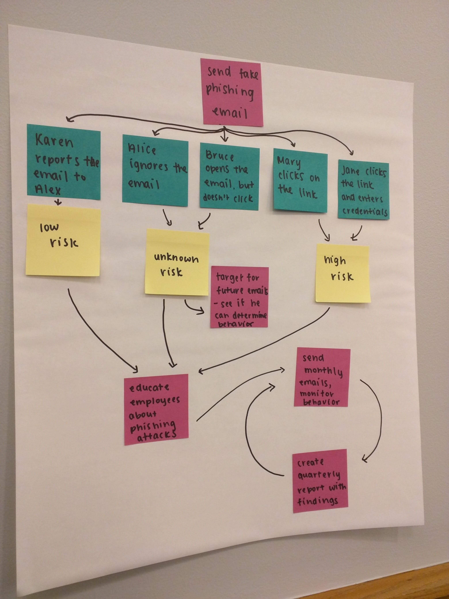
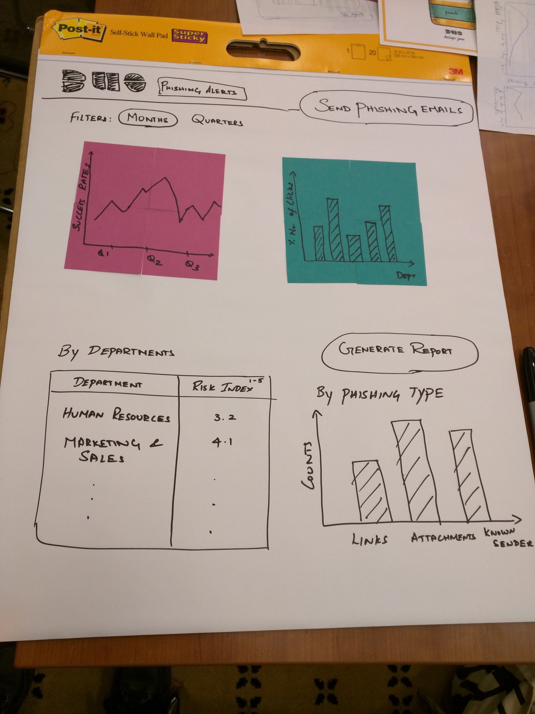

Design
Design Philosophy: To design a tool for IT administrators to identify potential risk in an organization.
Tools: Paper sketching, White bording, empathy maps, interaction design.
Using Research Data
We took the research and the evaluated needs to create a basic workflow of decisions we envision the user to make. As a team we came together to understand the various reactions to phishing emails by employees and mapped these actions on a white board. With a clear framework of actions available to us we ideated around this to concentrate on different solutions that can help the IT administrator uniquely identify the percentage of users making specific decisions.
Ideation
While ideating around different solutions within the framework we developed, we also started to test and back our decisions based on the resarch we had. This way we iteratively negated all the assumptions we had while we started out. We also recived postive ffedback from DUO security team whie working on this solution and incorporated some of their feedback while iterating.

Wireframing and Prototyping:
We created a low fidelity prototype of a dashboard targeted towards IT Administrators and Security consultants. The dashbord can be used to lauch new Anti-Phishing campaign with in an organisation and with in specific departments of the organisation. The campaign will send out mass emails which looks legitimate but contains either downloadable files or links to external websites. The details of the employees who are clicking on these links will be captured. To improve the credibility of the campaign, every campaign will be randomnized in the approach and the originating email id. The dashboard will present thes results visually and has graphs that show realtime and historic data. The dashboard also has options to see the Risk index of individual departments. With a click of a button, a report can be generated to show to the higher executives and to make a decision.

Marketing Strategy:
As a part of the solution, we also advocated the a marketing strategy that Duo can choose to implement. We proposed that DUO can bundle this as an addon to their existing security solution or can provide this as a stand alone service. By bundling this to the already existing software, DUO is increasing its product line and consequently increasing its market share.
Feedback from DUO:
We received great feedback from the DUO team and they appreciated our effort and process of integrating the product within their eco system.